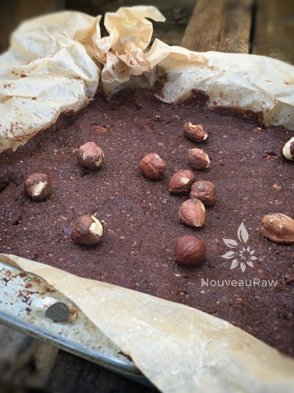
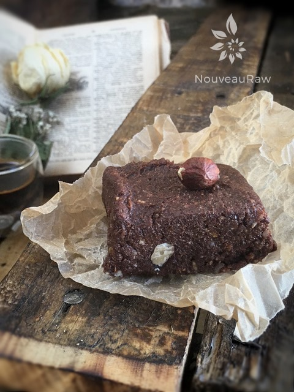

Hazelnut & Coconut Chai Brownies

~ raw, vegan, gluten-free ~
The secret ingredient in this brownie recipe is the chai spices, which give the brownies such a unique taste! You cut open a tea bag and pour it in! Your choice of green, black, or herbal chai tea. This recipe is a cross between a brownie and fudge-like textures. It is rich, decadent, and for the true chocolate lover!
Typical spices in chai include black pepper, cardamom, cinnamon, cloves, ginger, and the herb fennel. The fennel and spices frequently featured in chai are known to help promote better digestive health.
For example, black pepper stimulates the stomach to produce hydrochloric acid required for breaking down food, while fennel inhibits bacteria that cause gas and clove refreshes your mouth and throat.
Cinnamon is also a health-protecting antioxidant, and ginger is a recognized anti-nausea remedy that soothes the stomach. All of that aside, the bottom line is… IT TASTES GREAT! What more research needs to be done? haha
This recipe would be wonderful to make ahead and have it tucked away in the freezer. When unexpected guests pop in, pull out a tray of the brownies and be prepared to wow everyone.
Be forewarned… this fudge does not freeze solid. Due to the dates, it remains semi-soft even after being frozen for a week. It is a creamy, gooey, sticky-finger fudge! I hope you enjoy this recipe. Many blessings, amie sue
Makes 12-24 brownies, depends on how big your eyes are :)
- 4 cups soft Medjool dates, pitted
- 1/2 cup cold-pressed raw coconut oil, melted
- 1/2 cup raw cacao powder
- 1/4 cup maple syrup (or preferred sweetener)
- 1/4 cup ground flax seeds
- 2 Tbsp vanilla extract
- 6 coconut chai tea bags, contents of (see below)
- 1/4 tsp Himalayan pink salt
- 1 cup raw hazelnuts, soaked, dehydrated & chopped
Preparation:
- Prepare an 8×8, straight-edged pan by lining it with plastic wrap or parchment paper to prevent sticking. Set aside.
- In a food processor, fitted with the “S” blade, combine the dates, coconut oil, cacao, maple syrup, flax, vanilla, tea bag contents, and salt. Process until everything is well incorporated.
- I don’t recommend soaking the dates before softening them… the batter will get very, very sticky. Been there done that. :)
- Remove the dough and place in a large bowl.
- Add the chopped hazelnuts and work the dough by hand.
- Run your hand under the faucet to dampen your hand to prevent the dough from sticking too bad.
- Then using the palm of your hand, make folding motions with the dough, so the hazelnuts get evenly distributed.
- If the dough starts to stick to your hands, dampen them again.
- Press the dough into the pan.
- Put the brownies in the freezer and let it sit for a least an hour.
- Slice squares, sprinkle with cacao powder, and garnish with whole hazelnuts.
- Store in the fridge for 2-3 weeks and in the freezer for up to 3 months.
The Institute of Culinary Ingredients™
- Dates are a fantastic ingredient for raw food recipes, click (here) to read why.
- What is raw cacao powder?
- What is Himalayan pink salt, and does it matter? Click (here) to read more about it.
- Is coconut butter the same as coconut oil? Click (here) to find out.
- Learn how to grind your own flaxseeds for ultimate freshness and nutrition. Click (here).


© AmieSue.com